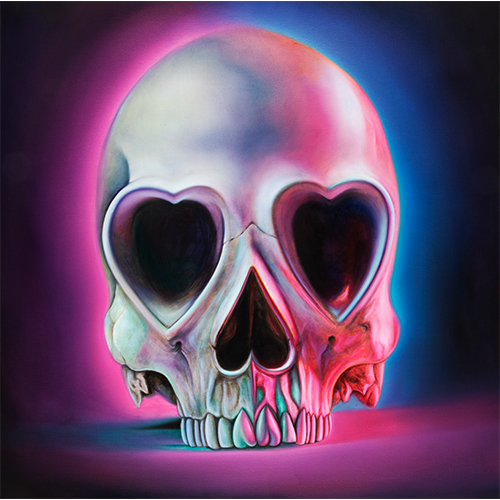

Exhibitions
Delusionville, Allouche Gallery, New York, New York, US, October 11–November 25, 2018.
Literature
Ron English, Fauxlosophy: The Art of Ron English (San Francisco: Last Gasp, 2008), p. 68. ISBN 978-0867196566.
Ron English, Death and the Eternal Forever (Korero Press, 2014), p. 40. ISBN 978-0957664920.
Notes
Reproduced in Allouche Gallery’s exhibition catalogue PDF for Ron English: Delusionville, accessed April 5, 2026.
In the Delusionville exhibition catalogue, this work is erroneously dated 2016.
In Death and the Eternal Forever, the dimensions are erroneously reported as 36 × 36 inches.